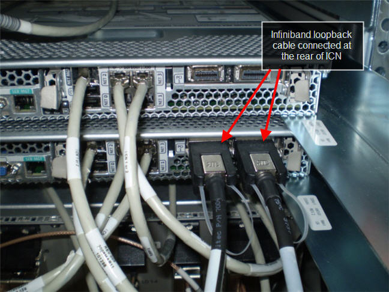
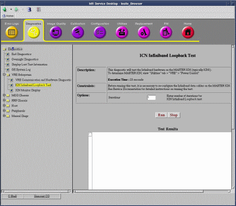
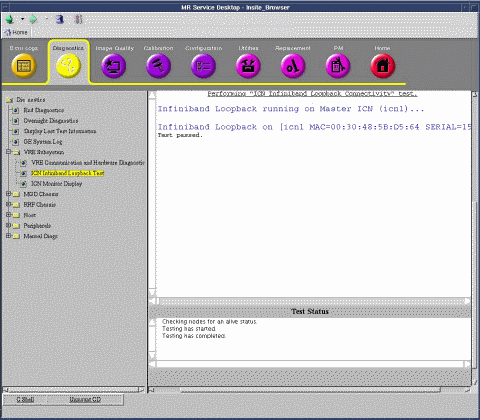

Proprietary to General Electric Company
Direction 5670006, Rev# 1
Discovery MR750w GEM Service Methods
Module Version 2.0, Version Date 9/23/08
Proprietary to General Electric Company |
Diagnostics >> VRE Subsystem
This diagnostic verifies the Infiniband hardware within a single ICN (as part of a multi-ICN system) to rule out hardware issues specific to an ICN by using the Infiniband "traceroute" utility to trace the path between port 1 and port 2 to establish connectivity. Since the hardware cannot be configured electronically for loopback operation, it is necessary to connect an Infiniband loopback cable between the ports for the test. This diagnostic provides a pass/fail indication for the Infiniband hardware within Master ICN. Used with other Infiniband tests (MGD Chassis Diagnostics, Infiniband Communication Diagnostic) to isolate an Infiniband problem.
| NOTE: | This diagnostic does not apply to a single ICN system. The ICN Infiniband Loopback Test can only be used with a multi-ICN system. |
Table 1: Purpose of ICN Infiniband Loopback Test
| Capability | What it does | When to use |
| ICN Infiniband Loopback Test | Tests Infiniband hardware within ICN. | After Infiniband Communication Diagnostics have been completed. To isolate an Infiniband problem. |
VRE (Infiniband hardware)
When running this diagnostic, it is necessary to change the Infiniband data cable connections on the ICN from their standard product configuration. The original connections must be established after running this diagnostic.
Additional equipment necessary to make the tool work.
Table 2: Additional Equipment Needed
| Item | Quantity | Part Number |
| Infiniband Loopback cable | 1 | 5146975-8 |
| ||||
| ELECTROCUTION HAZARD! | ||||
| DANGEROUS VOLTAGES ARE PRESENT THROUGH OUT THE SYSTEM CABINET WHEN POWER IS APPLIED. | ||||
| Refer to System Cabinet LOTO |
Identify the Master ICN as follows:
Go to Insite Browser => Utilities => VRE => Power Control
Do not change any settings on this screen
Note the MAC address for the Master ICN
For the 5127452 ICN's, the MAC address (paper) label is at the rear of the ICN. For the 5127452-3 ICN, the Mac address is located on the front of the ICN.
The Master ICN can then be identified using its MAC address.
At the rear of the Master ICN, locate the Infiniband data ports and remove the cable connected to the Infiniband port1. Note that after disconnecting this cable, the green and yellow LEDs will be off.
Connect the Infiniband Loopback cable as shown in Illustration 1 for the 5127452 and Step for the 5127452-3.
The green LED next to each Infiniband port should turn on as soon as the cable is connected.
Wait 15 seconds and confirm that the yellow LED next to each Infiniband port illuminates.
Go to Insite Browser => Diagnostics => VRE Subsystem => ICN Infiniband Loopback Test as shown in Illustration 3.
Enter the desired iteration amounts in the fields provided.
Click [Run] and wait for the test to complete. (See Illustration 4.)
| NOTE: | Once you click [Run], do not click anywhere else in the Common Service Desktop until the test is completed. If you need to abort the test prior to its completion, you must click [Stop]. |
Confirm that the test was successful.
Illustration 1: ICN Infiniband Loopback Cable for 5127452

Illustration 2: ICN Infiniband Loopback Cable for 5127452-3

Illustration 3: ICN Infiniband Loopback Screen

Illustration 4: ICN Infiniband Loopback Test Results

Review the error log and corresponding extended error messages for subsequent actions. Additional responses to the diagnostic results are as follows:
Table 3: Problem/Solution Table
| Fault | Problem Description | GE Field Action |
| The green LEDs do not display when the Infiniband loopback cable is connected. |
|
|
| Yellow LEDs do not display within 15 seconds of connecting the Infiniband loopback cable. |
|
|
| Test Failed | Master ICN Infiniband hardware problem. | Replace Master ICN. |
Remove the Infiniband loopback cable from the Infiniband ports on the rear of the Master ICN.
Reconnect the original Infiniband data cable to port 1.
Perform a TPS reset.